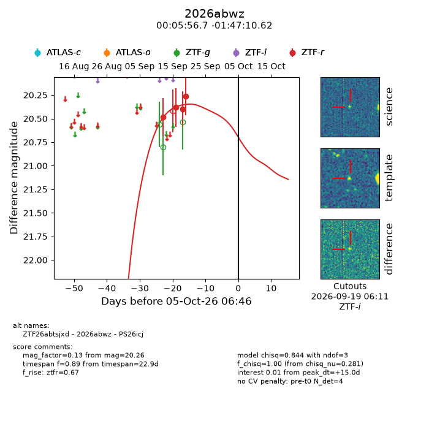
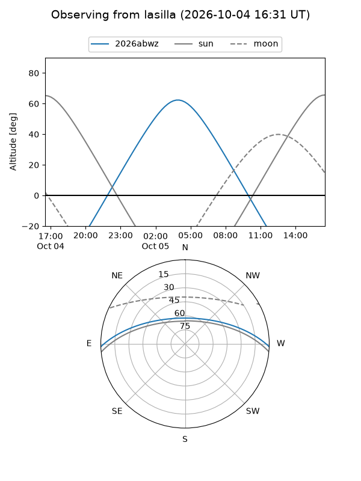
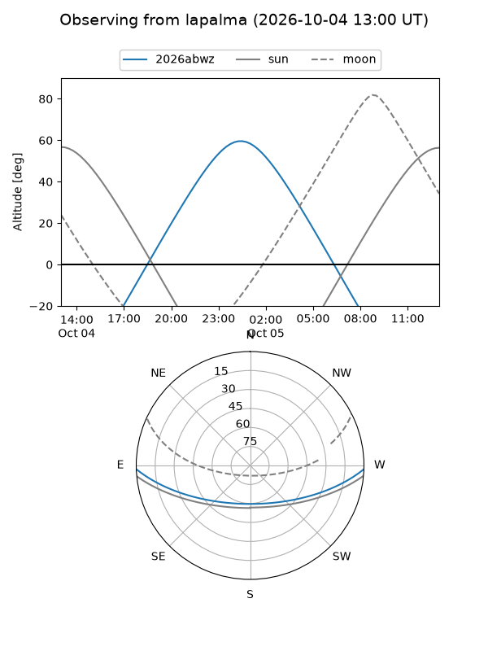
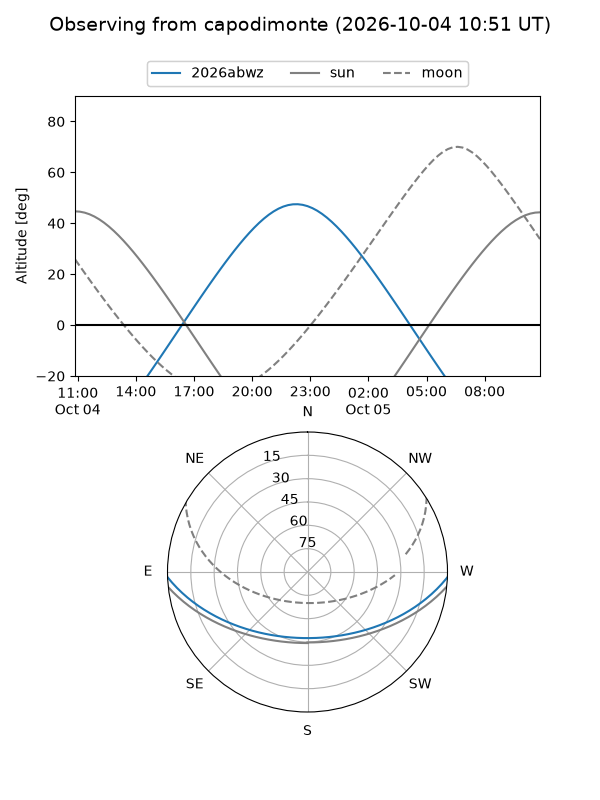
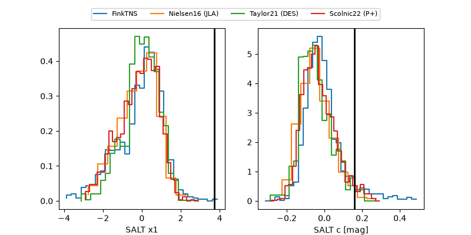

2026abwz
Target 2026abwz at 2026-10-05 06:48
Aliases and brokers:
FINK-ZTF: ztf.fink-portal.org/ZTF26abtsjxd
Lasair-ZTF: lasair-ztf.lsst.ac.uk/objects/ZTF26abtsjxd
ALeRCE-ZTF: alerce.online/object/ZTF26abtsjxd
YSE-PZ: ziggy.ucolick.org/yse/transient_detail/2026abwz
TNS name: wis-tns.org/object/2026abwz
Direct TNS query: direct search
alt names
ZTF26abtsjxd (ztf,fink_ztf)
2026abwz (tns,yse)
PS26icj (panstarrs)
Coordinates:
equatorial (ra, dec) = 1.4862,-1.78628
equatorial (HMS+DMS) = 00:05:56.68,-01:47:10.62
galactic (l, b) = (97.7425,-62.41208)
Flags:
TNS type: nan
peak dt: +15.0
Photometry:
last ztfr=20.26
4 ztfr detections
Lightcurve

Visibility



Additional plots
